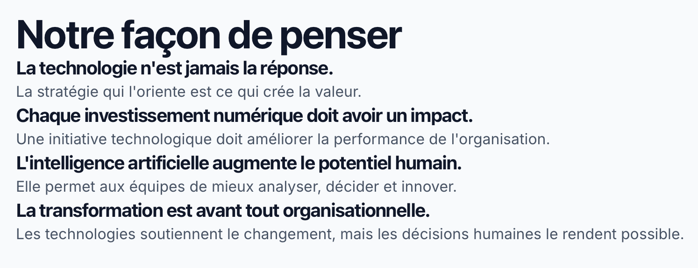

01
Intelligence Artificielle
Intégrer l'IA au cœur des processus métier pour une valeur opérationnelle mesurable.
Numerech accompagne les dirigeants dans leurs décisions stratégiques afin de transformer les défis technologiques et l'IA en leviers de performance durable.
DécouvrirLes organisations doivent faire face à une complexité croissante et naviguer entre adoption technologique et impératifs de rentabilité.

Intégrer l'IA au cœur des processus métier pour une valeur opérationnelle mesurable.
Simplifier les structures et maximiser l'efficience des systèmes en place.
Transformer l'information brute en un actif stratégique d'aide à la décision.
Protéger les opérations critiques dans un environnement numérique en constante mutation.
La technologie seule ne résout rien. C'est la clarté stratégique qui génère le rendement sur investissement.
Chaque initiative numérique doit répondre à un objectif d'affaires clair et quantifiable.
L'intelligence artificielle complète l'expertise de vos équipes pour accélérer la prise de décision.
Un projet technologique ne réussit que si les équipes s'approprient les nouveaux usages.
Analyse approfondie de votre maturité numérique et de vos enjeux métier.
Définition des priorités d'investissement et de la trajectoire cible.
Accompagnement dans le déploiement et le suivi des projets stratégiques.
Mesure des impacts, ajustements et amélioration continue de la performance.
Alignement IT/Business, feuilles de route technologiques et schéma directeur.
Optimisation des processus métier, automatisation et refonte des parcours.
Stratégie IA, valorisation des données et tableaux de bord décisionnels.
Conception de systèmes évolutifs, choix applicatifs et gouvernance cloud.
Gestion de la conformité, gouvernance de la sécurité et gestion des risques.
Mise en œuvre des transformations, acculturation au digital et formation.
Passer de la phase d'expérimentation à une rentabilité mesurable à l'échelle de l'entreprise.
Consulter la notePourquoi la gouvernance et l'alignement stratégique surpassent le choix des outils technologiques.
Consulter la noteStructurer la donnée pour améliorer la précision des arbitrages exécutifs.
Consulter la noteDéfinissons ensemble les leviers pour accélérer la performance de votre organisation.
Prendre rendez-vous